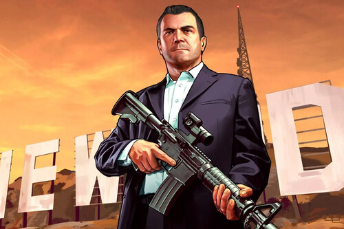

01
MICHAEL
Michael De Santa es un antiguo ladrón de bancos que vive retirado en Los Santos junto con su familia.
Aunque posee dinero y una vida aparentemente cómoda, sus problemas personales terminan llevándolo nuevamente al mundo criminal.